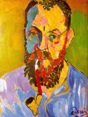

Derain: Matisse
Matisse: Harmonie v červené
Derain: Westminsterský most
|
CIVILISMUS, VITALISMUS, UNANIMISMUS
Moderní umělecké směry jako civilismus, vitalismus nebo unanimismus ohlašovaly tendence, které se plně projevily až na začátku 20. století v avantgardní tvorbě. Jejich průkopníci neuznávali pesimismus dekadentů, ale naopak opěvovali civilizační a technické výdobytky i přírodní a životní síly. Z jejich tvorby čiší optimismus, víra v lepší budoucnost a sílu lidské sounáležitosti. Průkopníkem těchto postojů byl americký básník Whitman, a proto bývá považován za zakladatele civilismu i vitalismu. Později tyto směry rozvíjeli evropští básníci jako Verhaeren, Fort nebo Romains, tvůrce unanimismu. Z českých spisovatelů měl k vitalismu nejblíže Šrámek a Neumann.
Filozofickou obdobou vitalismu bylo dílo francouzského myslitele Henriho Bergsona (1859-1941). Tento nositel Nobelovy ceny za literaturu přišel s koncepcí životního vzmachu (élan vital). Před rozumovým poznáním upřednostňoval intuitivní vhled, kladl velký důraz na subjektivní prožívání a zabýval se také teorií komična.
Ve výtvarném umění se k vitalismu blížil fauvismus [fovizmus]. Původně šlo o hanlivé označení nové skupiny francouzských malířů vystavujících na Podzimním salonu (1905-1907), jejichž styl kritikům připomínal „divoké šelmy“. Předními fauvisty byli Henri Matisse [anri matis], André Derain [deren], Georges Rouault [ruó], Henri Manguin [mangen] nebo Raoul Dufy [raul difi]. Ve stejné době se začíná rodit abstraktní (nefigurativní) umění, jehož průkopníkem byl český malíř František Kupka.
Matisse: Tanec
|

Rouault: Starý král
Dufy: Plakáty v Trouville

Kupka: Amorfa – Dvoubarevná fuga
Co vyjadřuje Kupkův obraz?
|
Walt Whitman (1819-1892)

Americký básník Walt Whitman [vólt vitmen] prošel řadou zaměstnání. Pracoval jako poslíček, sazeč, učitel, redaktor novin a úředník ministerstva vnitra. V občanské válce pečoval o raněné jako dobrovolný ošetřovatel. Jeho životním dílem je sbírka básní psaných volným veršem Stébla trávy. V této knize i v eseji Vyhlídky demokracie se mimo jiné vyznal ze svého obdivu k demokratickému zřízení.
Co víš i Lincolnovi?
Kupka: Lokalizace grafických hybných sil
|
Walt Whitman: Stébla trávy
Básnická sbírka Stébla trávy vyšla poprvé v roce 1855, Whitman na ní ale pracoval celý život a do své knihy přidával další a další verše. Z 12 básní se tak rozrostla na téměř 400 textů. Whitman je rozdělil do několika oddílů. Sbírka začíná lyrickými dedikacemi Nápisy, následuje rozsáhlý universalistický cyklus Zpěv o mně a oddíly Adamovy děti, Rákosí, Tažní ptáci, Co vyplavilo moře, U cesty, Rány na buben (téma občanské války), Památce prezidenta Lincolna, Podzimní potůčky, Šepot nebeské smrti, Od poledne do hvězdné noci, Písně rozloučení, Písek sedmdesátky a Sbohem, má představivosti. Básník opěvuje práci obyčejných lidí, vědu a materialismus, je fascinován přírodou a jejími živly, vyznává se z obdivu k demokracii, kolektivnímu úsilí, Spojeným státům americkým i zavražděnému prezidentu Lincolnovi. Staví se do role pěvce, ztotožňuje se s různými aspekty života a dospívá k universalistické koncepci světa, kde je vše smysluplně provázáno.
Stébla trávy nevzbudila valný ohlas. Američtí čtenáři se o ně začali zajímat až po roce 1882, kdy byla sbírka zakázána. Kritikové autora obviňovali z nemravnosti, homosexuality a neuměleckosti.
Walt Whitman: Vyhlídky demokracie
V eseji Vyhlídky demokracie předkládá Whitman vlastní vizi ideální demokratické budoucnosti a srovnává ji s americkou realitou.
|
Civilismus
Civilisté opěvovali moderní civilizaci a její výdobytky – vynálezy, objevy, stroje, továrny atd. K nejvýznamnějším představitelům tohoto směru patří Whitman a Verhaeren, v Čechách potom S.K.Neumann (Nové zpěvy).
Vitalismus
Vitalisté oslavovali životní (lat. vitalis) energii, přírodu a aktivní přístup k životu. K předním vitalistům patří Whitman a Verhaeren, v Čechách potom Neumann (Kniha lesů, vod a strání, Ať žije život!) a Šrámek.
Jak se liší volný verš od vázaného?
V čem se liší volný verš od prózy?
Napiš vlastní báseň volným veršem. Zpracuj stejné téma veršem vázaným i prózou.
Jak na tebe působí Whitmanovy básně? Co se ti na nich líbí a nelíbí? Rozumíš jim?
Co si myslíš o Whitmanově výroku „Země je básní a ženy a muži nepsanými verši“?
Co si Whitman myslí o demokracii a jejích vyhlídkách?
Jaký je tvůj názor na demokratické státní zřízení?
Je Česká republika demokratickou zemí? Podle čeho tak usuzuješ?
Srovnej život lidí v demokratických a totalitních státech.
|
Émile Verhaeren (1855-1916)
Vlámský spisovatel Émile Verhaeren [emil veraren] žil v Belgii a psal francouzsky. Zprvu skládal básně v duchu parnasismu a symbolismu, ale víra v moderní civilizaci, pokrok a život z něj učinila čelného představitele civilismu a vitalismu. Kromě básnických sbírek Přeludné krajiny, Přízračné vesnice, Chapadlovitá města, Bouřlivé síly, Znásobená záře, Svrchované rytmy nebo Vysoké plameny napsal kolektivní drama Svítání.
|
Verhaerenova poezie
Verhaeren složil ve svých básních hold výdobytkům technické civilizace (Továrny) a životodárným silám přírody (Strom). Na rozdíl od symbolistů a dekadentů vzhlíží k budoucnosti s nadějí a opěvuje aktivní přístup k životu (Žhnoucí život).
|
Gogh: Morušovník
Co tě nejvíce zaujalo na ukázkách?
Porovnej básně Továrny a Strom.
Najdi v ukázkách rysy civilismu, vitalismu a dalších moderních uměleckých směrů.
Srovnej Verhaerenovu tvorbu s Whitmanovou.
|
Paul Fort (1872-1960)
Francouzský básník Paul Fort [pol fór] založil divadlo Le Théâtre d’Art, kde se uváděly symbolistické hry. Je autorem monumentálního cyklu Francouzské balady.
Považuješ Fortovy texty za básně nebo prózy?
V čem mají blíže k poezii a v čem k próze?
|
Paul Fort: Francouzské balady
Francouzské balady tvoří rozsáhlý cyklus, na kterém Fort pracoval přes 50 let. Celkem čítá 54 svazků a spisovatel do něj zařadil většinu básnických sbírek, které za svůj život napsal.
|
Manguin: 14. červenec v Saint-Tropez
|
Stanislav Kostka Neumann
(1875-1947)

Neumann pocházel z Prahy, kde také zemřel. Prošel bouřlivým uměleckým i názorovým vývojem od dekadence a symbolismu přes anarchismus až k proletářské poezii. Vrcholem jeho tvůrčích sil bylo období vitalismu (naturismu) – básnická sbírka Kniha lesů, vod a strání a civilismu – kniha Ať žije život! a básnická sbírka Nové zpěvy.

Kupka: Newtonovy kotouče
|
S.K.Neumann: Kniha lesů, vod a strání
Básnickou sbírkou Kniha lesů, vod a strání (1914) složil Neumann hold přírodě a jejím krásám. Tato sbírka přírodní lyriky je považována za vrchol jeho tvorby. Můžeme v ní najít rysy vitalismu i naturismu.
S.K.Neumann: Ať žije život!
Stať Ať žije život! z roku 1913 můžeme označit za český manifest vitalismu. Dala název pozdější Neumannově knize.
S.K.Neumann: Nové zpěvy
Básnická sbírka Nové zpěvy vznikla před 1. světovou válkou, ale vyjít mohla až na jejím konci (1918). Ústředním tématem této knihy je oslava moderní civilizace a techniky. Ve vstupním cyklu Zpěvy drátů Neumann velebí technické výdobytky, které propojují a sjednocují svět. Následují oddíly Zpěvy světel a Zpěvy z ticha (Skřivan). Později k nim ještě přibyly Zpěvy z lomozu (Chvála rotačky, Stavba vodovodu) a Zpěvy poválečné.
|
Naturismus
Naturismus byl méně známý směr, který propagoval přírodu a přirozenost (lat. natura). Kromě Neumanna se k němu hlásil např. Francouz André Gide.
Jak se ti líbí Neumannovy básně?
Najdi v ukázkách rysy jednotlivých moderních uměleckých směrů.
Kupka: Počátek života
Zrekapituluj Neumannovy názory na umění popsané v manifestu Ať žije život!
Souhlasíš s jejich autorem? Proč?
Beneš Knüpfer: Fauni prchající před automobilem
Srovnej ukázky z Neumannova cyklu Zpěvy drátů s „ideální“ básní citovanou ve verneovce Paříž ve 20. století.
|
Fráňa Šrámek (1877-1952)

Šrámek se narodil v Sobotce a zemřel v Praze. Gymnaziální léta strávil v Písku. Přátelil se s Neumannem a hlásil se k anarchistickému hnutí. Jeho básnická sbírka Splav, romány Stříbrný vítr a Tělo nebo divadelní hry Léto a Měsíc nad řekou mají velmi blízko k vitalismu a impresionismu.

Kupka: Voda (Koupající se)
|
Fráňa Šrámek: Stříbrný vítr
Senzualistický román Stříbrný vítr líčí dospívání Jana Ratkina. Jeník si příliš nerozumí s otcem a citově se upíná k matce. S obdivem vzhlížel ke svému strýci, jehož sebevražda Jeníkem otřásla. Naivní a citově založený Ratkin postupně poznává skutečný život. Z venkova odjíždí do města studovat gymnázium. Odmítá pochybnou morálku dospělých, zvláště matky svého spolužáka Huga, která podvádí manžela. Spřátelí se se studentem Zachem, se kterým navštíví veřejný dům. Zamiluje se do Aničky „posedlé“, ale ta o něj nestojí.
Fráňa Šrámek: Splav
Rozsáhlá básnická sbírka Splav (1916) je velmi různorodá. Obsahuje skladby lyrické i lyrickoepické. Velmi výrazný je motiv těsného sepětí s přírodou, který dává Šrámkovým veršům naturistický ráz, a s rodným krajem.
|
Kupka: Tryskání
Líbila se ti ukázka ze Šrámkova Stříbrného větru? Proč?
Jak člověk pozná, že už je dospělý?
V čem se liší dospívání od dospělosti?
Srovnej studentský život s životem dospělých.
Co si myslíš o výroku „nevěř nikomu, komu je přes třicet“?
Jak na tebe působí Šrámkova poezie?
Vyber si jakoukoliv Šrámkovu báseň, nauč se ji zpaměti a zarecituj ji svým spolužákům.
Vysvětli, proč sis vybral/a právě tuto báseň.
|
Jules Romains (1885-1972)
Francouz Louis Farigoule [lui farigul] psal pod pseudonymem Jules Romains [žil romen] a proslul jako zakladatel unanimismu. Přátelil se s autory sdruženými ve skupině Opatství, kteří vydali Romainsovu básnickou sbírku Unanimní život a nadšeně se přihlásili k novému směru. Romainsovým vrcholným dílem je 27 svazkový román Lidé dobré vůle. Do češtiny byla přeložena satirická divadelní hra Knock neboli Triumf vědy nebo prózy Obrozené městečko, Kdosi umřel a Kumpáni.
Pokus se zjistit něco o skupině Opatství.
|
Jules Romains: Kumpáni
Humoristický román Kumpáni vypráví o skupině přátel, kteří v noci přepadnou místní kasárny a vydávají se za ministerskou inspekci. Vyhlásí poplach, čímž celé město Ambert uvedou ve zmatek. Jeden z povedených kumpánů se převleče za kněze a ujme se ranního kázání. Jeho poselstvím je „Milujte se a množte se!“... Poslední taškář se vydává za sochu. Při slavnostním odhalení „ožije“ a začne nadávat zmateným divákům.
|
Unanimismus
Název unanimismus je složeninou latinských slov unus (jeden) a animus (duch). Jeho tvůrce Jules Romains popsal nový směr v manifestu Duše lidí (1904) a své myšlenky dále rozvedl v Příručce deifikace. Unanimisté se odvraceli od materialismu. Jejich ideálem byly nadosobní hodnoty, pocit sounáležitosti a kolektivismus. Vyznávali sepětí člověka s přírodou i věcmi a tzv. kolektivní duši.
Najdeš v Romainsově básni Jednou rysy unanimismu?
Jaké je poselství této básně?
Souhlasíš s Romainsovými názory?
|
Internetové stránky
Whitman
Whitman
Whitman
Whitman
Verhaeren
Romains
Exkurze
Kupka, Muzeum Kampa, Praha

Kupka: Klávesy piana (Jezero)
|
Doporučená četba
Bergson, Henri: Myšlení a pohyb, přel. J.Čapek, Mladá fronta, Praha 2003
Bergson, H.: Smích, Naše vojsko, Praha 1993
Fort, Paul: Francouzské balady, přel. J.Konůpek, SNKLHU, Praha 1960
František Kupka průkopník abstrakce a malíř kosmu, Verlag Gerd Hatje, 1997 (katalog k výstavě)
Lamač, Miroslav: František Kupka, Odeon, Praha 1984
Neumann, Stanislav Kostka: Básně 3, SNKLU, Praha (Nové zpěvy)
Neumann, S.K.: Kniha lesů, vod a strání, Odeon, Praha 1972
Neumann, S.K.: Konfese a konfrontace (2 svazky), Československý spisovatel, Praha 1988
Romains, Jules: Kumpáni, přel. V.Brett, Odeon, Praha 1972
Romains, J.: Lidé dobré vůle, Praha 1937
Spurný, Jan: Fauvismus, Nakladatelství československých výtvarných umělců, Praha 1966
Šrámek, Fráňa: Modrý a rudý, Stříbrný vítr, Léto, Splav, NLN, Praha 2000
Vančura, Zdeněk: Walt Whitman, básník demokracie, Praha 1955
Verhaeren, Emile: Básně, přel. Konůpek, Zábrana, SNKLU, Praha 1962
Whitman, Walt: Stébla trávy, přel. Kolář, Urbánek, Odeon, Praha 1969
Whitman, W.: Stébla trávy, přel. Kolář, Urbánek, Cylindr, Praha 1998 (výbor)
Whitman, W.: Zpívám o sobě, přel. I.Skála, Československý spisovatel, Praha 1983
|
Vypracuj písemný referát o některé z uvedených knih.

Komín obytného domu Casa Milá od Antonia Gaudího
|
|